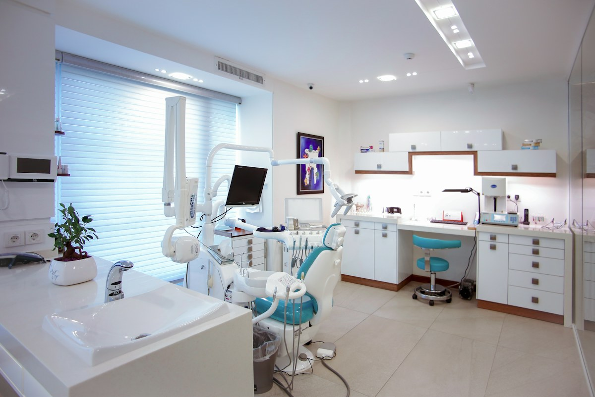

Avaliação inicial
Conversa sobre seu histórico e suas necessidades, como ponto de partida para o cuidado.
Sob avaliação
Odontologia / cuidado e escuta
Da prevenção às possibilidades de tratamento, conheça os atendimentos e escolha por onde começar. Cada cuidado parte de uma conversa e de uma avaliação individual.

Um espaço de cuidado · imagem ilustrativaExplore / Clínica odontológica
Encontre o atendimento que deseja conhecer.
Conversa sobre seu histórico e suas necessidades, como ponto de partida para o cuidado.
Orientações de prevenção e acompanhamento, conforme a avaliação individual.
Uma avaliação para conversar sobre expectativas e possibilidades para o sorriso.
Conheça as etapas de avaliação e planejamento do acompanhamento ortodôntico.
Conversa sobre necessidades funcionais e possibilidades de cuidado individual.
Acolhimento e orientação para crianças e responsáveis, de acordo com cada fase.
Nenhuma opção encontrada. Experimente outra categoria ou busca.
LUME / Nosso cuidado
Seu histórico, suas dúvidas e suas expectativas fazem parte do cuidado. Uma avaliação ajuda a conhecer as necessidades de cada pessoa e a conversar sobre as possibilidades, as etapas e os limites de um tratamento.
O caminho do cuidado
Veja as opções de prevenção, estética e tratamento.
Use o primeiro contato para indicar o atendimento que deseja conhecer.
Um tratamento real depende de avaliação profissional e de planejamento individual.
Perguntas frequentes
A avaliação inicial é um ponto de partida para conversar sobre suas necessidades. As categorias ajudam a conhecer os atendimentos, mas não substituem uma avaliação clínica.
Não. Condutas, duração e valores dependem da análise individual por um profissional. Esta página não fornece diagnóstico nem orientação clínica.
Não. Você pode experimentar a escolha do atendimento, da data e do período. O agendamento é demonstrativo, sem envio de dados ou reserva de horário.
Primeiro contato
Escolha o atendimento que deseja conhecer e teste a solicitação de consulta.
Fotografias ilustrativas de referência. Marcas, ofertas e experiências deste modelo são fictícias.